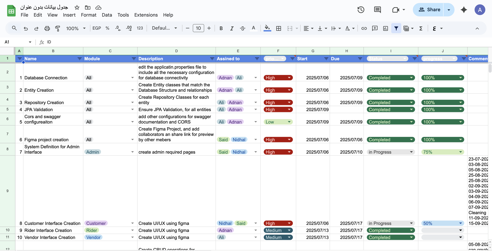

Documentation¶
Goal: Write and maintain clear, effective documentation.
Current Level: Level 3 (In Progress)
Level 1: Documentation Basics¶
- Competencies: Writing README files, basic Markdown, documenting code usage
- Tools: Markdown, GitHub README, Google Docs
- Checklist:
- Write a clear project README
- Document code usage and examples
- Use basic Markdown formatting
Level 2: Structured Docs & Standards¶
- Competencies: API docs, docstrings, templates, style guides
- Tools: Sphinx, JSDoc, OpenAPI/Swagger, Confluence
- Checklist:
- Add docstrings/comments to functions and classes
- Create API documentation using a standard tool
- Follow a documentation style guide
- Create documentation templates
- Implement code documentation standards
Level 3: Collaborative & Living Docs¶
- Competencies: Collaborative editing, versioned docs, changelogs, diagrams
- Tools: Google Docs, Notion, Mermaid, PlantUML
- Checklist:
- Collaborate on docs with teammates
- Maintain a changelog for your project
- Add diagrams to explain architecture or flows
- Implement versioned documentation
- Set up collaborative workflows
Level 4: Automation & Publishing¶
- Competencies: Automated doc generation, publishing, continuous documentation
- Tools: MkDocs, Read the Docs, GitHub Pages, CI/CD integration
- Checklist:
- Automate documentation builds and publishing
- Host docs online for easy access
- Integrate doc updates into CI/CD pipeline
Level 5: Documentation as a Product¶
- Competencies: User guides, onboarding, localization, feedback loops
- Tools: Helpdesk platforms, translation tools, analytics
- Checklist:
- Create user guides or onboarding docs
- Localize documentation for multiple languages
- Collect and act on user feedback for docs
Resources¶
Progress & Evidence¶
Level 1: Documentation Basics (18-10-2025)
Status: Completed
Focus: READMEs, basic technical writing, Markdown formatting
Evidence:
- Upskilling Documentation Site
- Smart Deploy Monitor Project
- Comprehensive README Files (Completed 18-10-2025): Created detailed README files for all projects
- MkDocs Documentation (Completed 18-10-2025): Built complete documentation site with navigation
- Markdown Proficiency (Completed 18-10-2025): Professional formatting and structure
What I Learned: - README Best Practices: Clear project descriptions, setup instructions, usage examples - Markdown Mastery: Headers, lists, code blocks, tables, links, and formatting - Documentation Structure: Logical organization and navigation - Technical Writing: Clear, concise, and user-friendly documentation - MkDocs Integration: Static site generation and GitHub Pages deployment - Version Control: Documentation as code with Git integration
Applied Knowledge: - Created comprehensive README files for all projects with setup and usage instructions - Built professional MkDocs documentation site with proper navigation - Implemented consistent documentation standards across all projects - Used advanced Markdown features for professional presentation - Integrated documentation with CI/CD for automated deployment
Resources Used: - MkDocs documentation and Material theme - GitHub Pages for hosting - Markdown best practices and formatting - Technical writing principles
Key Achievement: Successfully created and maintained comprehensive documentation for multiple projects, demonstrating professional documentation skills and technical writing proficiency.
Level 2: Structured Documentation (Completed)
Status: Completed
Focus: API docs, docstrings, templates, style guides
Evidence:
- Documentation Level 2 Practice
- Java Documentation Examples (Completed 26-10-2025): Comprehensive JavaDoc examples with full documentation standards
- API Documentation Template (Completed 26-10-2025): Complete REST API documentation template with examples
- Documentation Style Guide (Completed 26-10-2025): Comprehensive style guide with formatting standards and best practices
Level 2: Structured Documentation Commands & Examples
JavaDoc Documentation:
/**
* Creates a new user with the provided information.
*
* This method validates the input data, encrypts the password using BCrypt,
* and persists the user to the database.
*
* @param user The user object containing all necessary information
* @return User The created user with generated ID and timestamps
* @throws IllegalArgumentException if email is already in use
* @throws ValidationException if input data is invalid
*
* @example
* <pre>{@code
* User newUser = new User();
* newUser.setEmail("ahmed.hassan@example.com");
* newUser.setPassword("securePassword123");
* User createdUser = userService.createUser(newUser);
* }</pre>
*/
public User createUser(User user) {
// Implementation
}
API Documentation Structure:
### GET /users
Retrieve a list of users with optional filtering and pagination.
**Parameters:**
- `page` (optional, integer): Page number (default: 0)
- `size` (optional, integer): Number of items per page (default: 10)
- `role` (optional, string): Filter by user role
**Response:**
```json
{
"content": [
{
"id": "uuid",
"email": "ahmed.hassan@example.com",
"firstName": "أحمد",
"lastName": "حسن",
"role": "USER",
"isActive": true,
"createdAt": "2025-10-26T10:00:00Z"
}
],
"pageable": {
"pageNumber": 0,
"pageSize": 10,
"totalElements": 100,
"totalPages": 10
}
}
Status Codes:
- 200 OK: Successfully retrieved users
- 400 Bad Request: Invalid parameters
- 401 Unauthorized: Authentication required
**Documentation Style Guide:**
```markdown
# Headers
# Level 1 Header (Page Title)
## Level 2 Header (Major Sections)
### Level 3 Header (Subsections)
# Code Blocks
```java
public class Example {
// Code here
}
Tables¶
| Column 1 | Column 2 | Column 3 |
|---|---|---|
| Data 1 | Data 2 | Data 3 |
|
||
| https://api.example.com/v1 | ||
|
Level 3: Collaborative & Living Docs (Completed)
Status: Completed
Focus: Collaborative editing, versioned docs, changelogs, diagrams
Evidence:
- Documentation Level 3 Practice
- Comprehensive Changelog (Completed 26-10-2025): Complete project changelog following Keep a Changelog standards
- Architecture Diagrams (Completed 26-10-2025): Visual system architecture using Mermaid diagrams
- Collaborative Workflows (Completed 26-10-2025): Team collaboration processes and documentation workflows
- Real-World Collaboration (Completed 26-10-2025): Google Sheets project management with teammates (Adnan, Ali, Said, Nidhal)
Level 3: Changelog Management
Keep a Changelog Standards:
## [2.1.0] - 2025-10-26
### Added
- Documentation Level 2: Comprehensive structured documentation
- JavaDoc examples
### Changed
- Enhanced API documentation with phone numbers (+968)
### Fixed
- Documentation consistency across all examples
Level 3: Architecture Diagrams
Mermaid System Architecture:
graph TB
subgraph "Client Layer"
WEB[Web Application]
MOBILE[Mobile App]
end
subgraph "Application Layer"
USER_SERVICE[User Service]
AUTH_SERVICE[Auth Service]
end
subgraph "Data Layer"
POSTGRES[(PostgreSQL)]
REDIS[(Redis Cache)]
end
WEB --> USER_SERVICE
MOBILE --> AUTH_SERVICE
USER_SERVICE --> POSTGRES
AUTH_SERVICE --> REDISLevel 3: Collaborative Workflows
Git Branch Strategy:
# Documentation branches
git checkout -b docs/feature/user-guide-update
git checkout -b docs/fix/api-documentation-typo
git checkout -b docs/update/architecture-diagrams
# Commit messages
git commit -m "docs: Add user authentication guide"
git commit -m "docs: Fix broken links in API documentation"
Level 3: Real-World Collaboration

Team Collaboration Features: - Team Members: Adnan, Ali, Said, Nidhal - Task Assignment: Multiple assignees per task - Real-time Updates: Live collaboration on project status - Progress Tracking: Percentage completion (100%, 75%, 50%) - Status Management: Completed, In Progress tracking
Level 3: Versioned Documentation
Git-Based Versioning Strategy:
# Create version tags
git tag -a v1.0.0 -m "Initial documentation release"
git tag -a v2.0.0 -m "Added API documentation and JavaDoc examples"
git tag -a v3.0.0 -m "Collaborative documentation with Mermaid diagrams"
# Push tags to remote
git push origin v1.0.0
git push origin v2.0.0
git push origin v3.0.0
# Create version branches for maintenance
git checkout -b docs/v1.0
git checkout -b docs/v2.0
git checkout -b docs/latest
# Switch between versions
git checkout docs/v1.0 # Work on v1.0 maintenance
git checkout docs/latest # Work on latest features
Semantic Versioning Implementation:
## Version Strategy
### MAJOR (X.0.0) - Breaking Changes
- Complete documentation restructure
- New documentation framework
- Breaking API changes
### MINOR (X.Y.0) - New Features
- New documentation sections
- Additional examples
- Enhanced diagrams
### PATCH (X.Y.Z) - Bug Fixes
- Typo corrections
- Link fixes
- Formatting improvements
Version Management Workflow:
# 1. Create feature branch for new version
git checkout -b docs/version-4.0.0
# 2. Make documentation changes
git add .
git commit -m "docs: Add Level 4 automation documentation"
# 3. Create release tag
git tag -a v4.0.0 -m "Added automation and publishing features"
# 4. Merge to main and push
git checkout main
git merge docs/version-4.0.0
git push origin main
git push origin v4.0.0
Documentation Versioning Best Practices: - Version Branches: Maintain separate branches for each major version - Tagging Strategy: Use semantic versioning for all releases - Change Logs: Document all changes in CHANGELOG.md - Backward Compatibility: Maintain older versions for reference - Release Notes: Create detailed release notes for each version
Level 4: Automation & Publishing (In Progress)
Status: In Progress
Focus: Documentation as code, automated generation, CI/CD integration
Skills Demonstrated: - Automated Documentation Generation (In Progress): CI/CD pipeline integration - Documentation as Code (In Progress): Version-controlled documentation workflows - Automated Publishing (In Progress): GitHub Pages deployment automation
Level 4: Documentation as Code
GitHub Actions Workflow:
name: Documentation CI/CD
on:
push:
branches: [ main ]
jobs:
build-and-deploy:
runs-on: ubuntu-latest
steps:
- uses: actions/checkout@v3
- name: Setup Python
uses: actions/setup-python@v4
with:
python-version: '3.9'
- name: Install dependencies
run: |
pip install mkdocs
pip install mkdocs-material
- name: Build documentation
run: mkdocs build
- name: Deploy to GitHub Pages
uses: peaceiris/actions-gh-pages@v3
with:
github_token: ${{ secrets.GITHUB_TOKEN }}
publish_dir: ./site
Level 4: Automated Publishing
Basic Deployment:
# Build and deploy documentation
mkdocs build
mkdocs gh-deploy
# Automated quality checks
mkdocs build
linkchecker site/
Level 5: Documentation Leadership
Status: Planned
Focus: Org-wide documentation strategy and culture